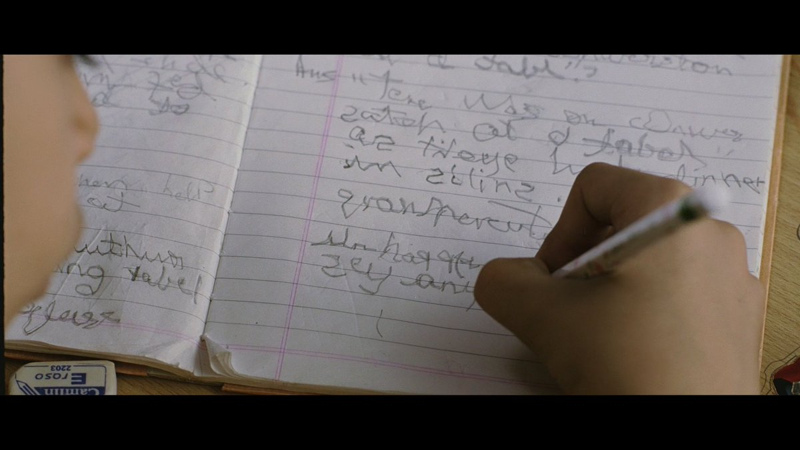
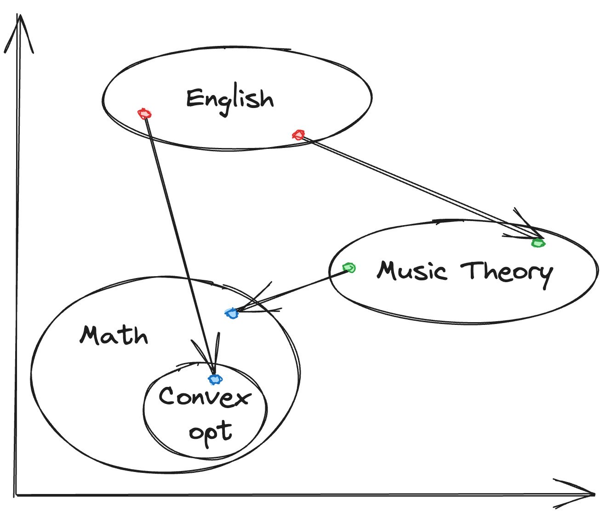

How closely related are learning media to learning disabilities? Are different learning media able to accommodate different learning disabilities?
I recently rewatched Taare Zameen
Par, a Bollywood movie about a child with dyslexia and other
learning disabilities. The movie portrays the child’s struggles trying
to understand English: letters float around the screen, jumble amongst
themselves, and even spawn into spiders. Interestingly, the Hindi
alphabet wasn’t visualized in the same way.

Floating letters from Taare Zameen Par
Initially this made sense, since Hindi has a far larger alphabet and is phonetically closer to spoken language than English. But as I thought about it more, I wondered if the different properties of the language affected learning disabilities. Would a child with dyslexia have the same problems with Hindi as they would with English? Taking this one step further, what is the relationship between the learning media and different learning disabilities?
For example, is dyslexia more or less prevalent in languages that don’t use the Latin alphabet? Would mathematics be simpler to learn and understand if we used a different base or notation system? Would programming be easier to pick up if the semantics were closer to natural language, or even a different medium?
I’m no expert in any of these fields, but I think it’s a fun exercise to think about.
Interpolation in a LLM's "learned representation" vector space
Some low-hanging fruit is leveraging embeddings or LLMs to interpolate between representations of different media. For example, interpolating an English statement with a mathematical statement, or interpolating between natural language and a programming language. Training embeddings is fairly inexpensive (depending on the GPU, <$1 hour for 1 billion tokens), while LLMs are good at translating between different topics and pattern matching of “learned” things. Automating these flows with self-serve tools can lower the barrier for everyone to discover the best learning media for them.